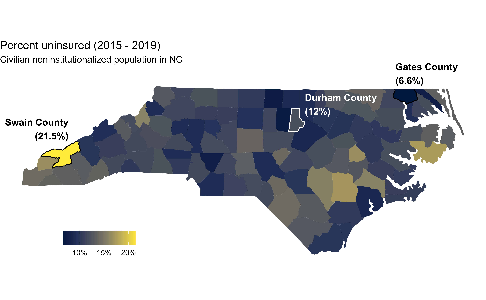
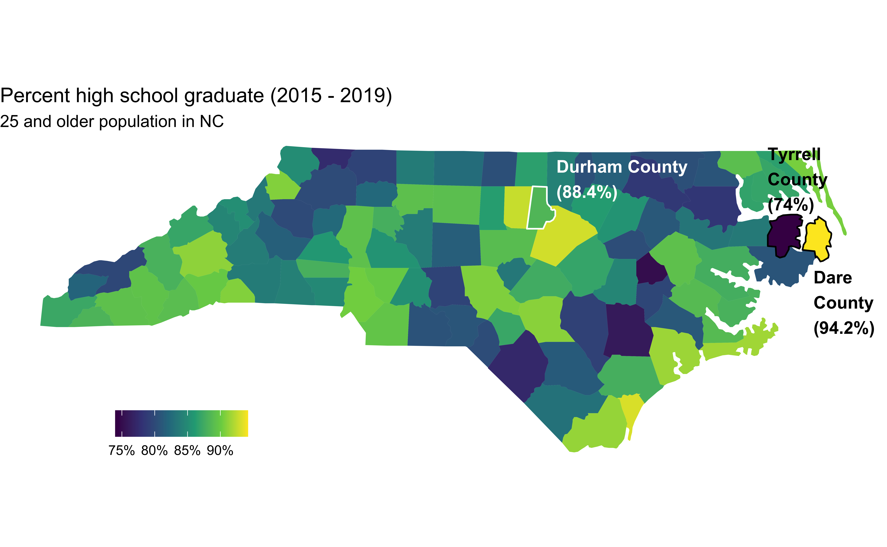
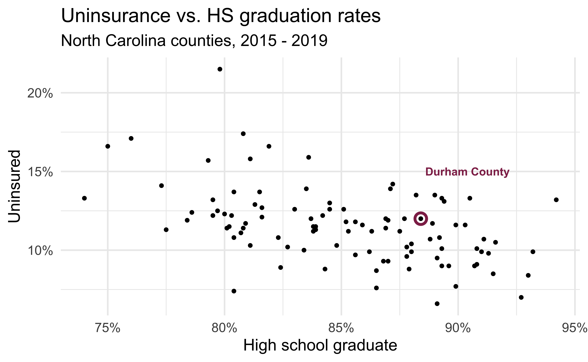
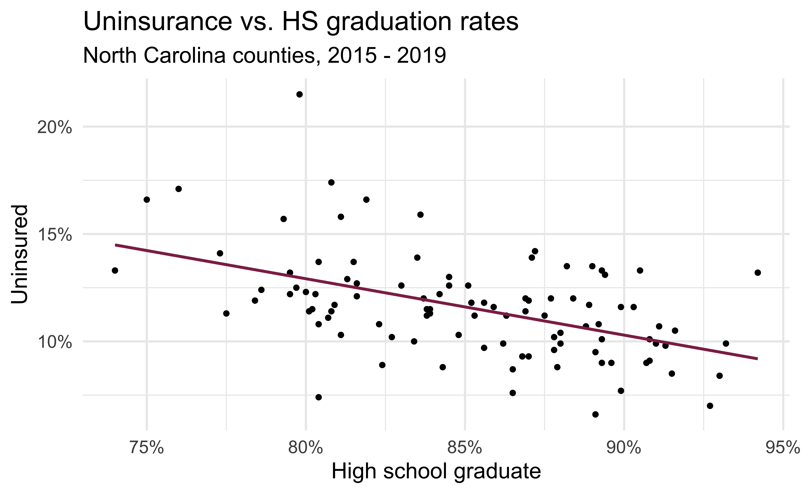
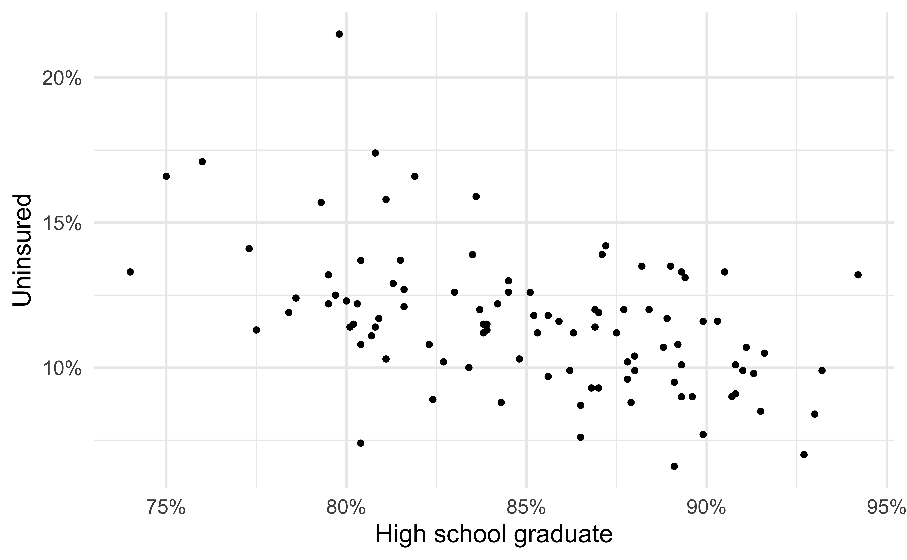
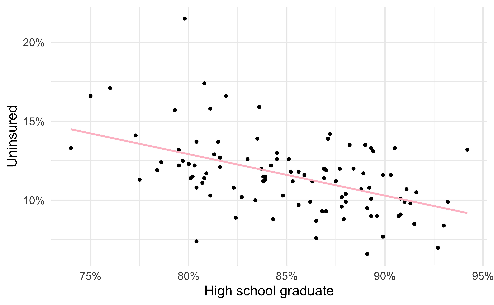
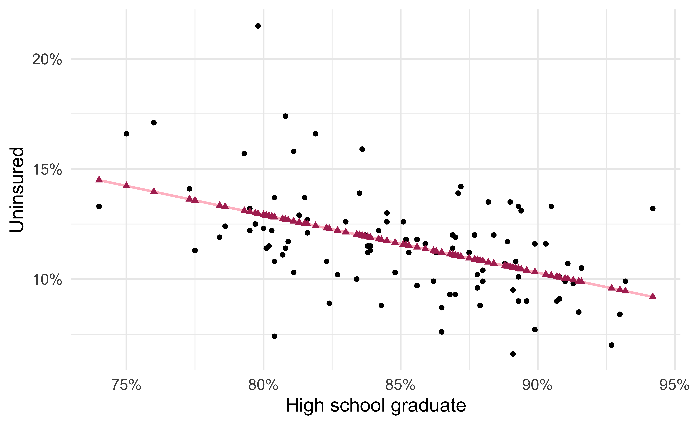
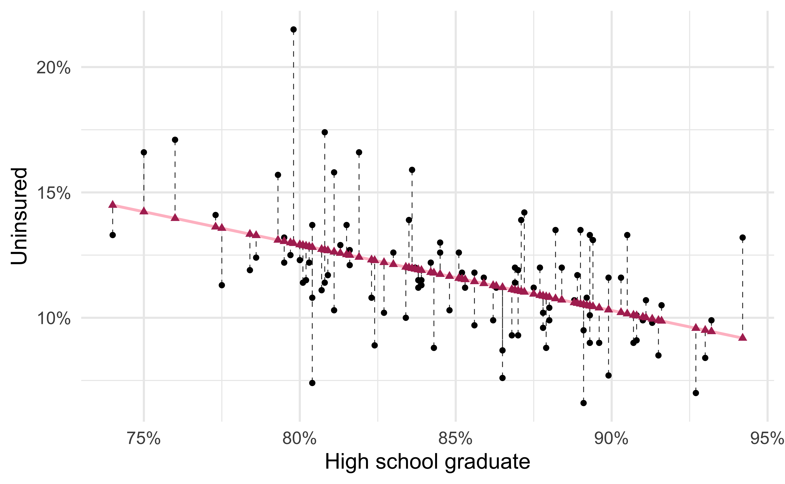
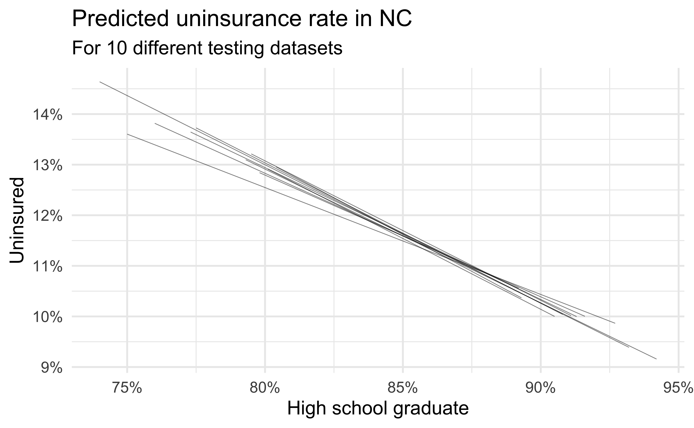
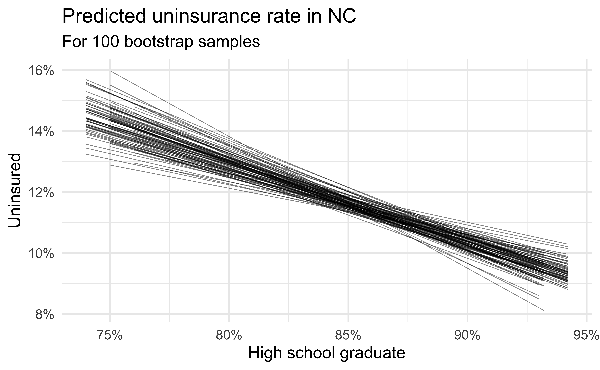

# load packages
library(tidyverse) # for data wrangling and visualization
library(tidymodels) # for modeling
library(usdata) # for the county_2019 dataset
library(scales) # for pretty axis labels
library(glue) # for constructing character strings
# set default theme and larger font size for ggplot2
ggplot2::theme_set(ggplot2::theme_minimal(base_size = 16))SLR: Prediction + model evaluation
STA 210 - Spring 2022
Welcome
Announcements
- New on the course website: FAQ
- New communication tool: Slack
- Find the invite link in your inbox / on Sakai announcements
- Use #general for questions, #random for random 🤪
- Use code formatting for for questions involving code (see Course FAQ for a demo video)
- My office hours: All virtual for now, hope to move 1 hour / week to in person later in the semester
Hybrid teaching
- Lectures:
- In person as long as university says so (and I don’t have COVID)
- If you can’t be in class (and you’re well enough to follow along), watch live (or the recording later) on Panopto
- Watching live and have questions? Post on Slack!
- In class and see someone ask a question on Slack? Please raise it to me!
- Labs:
- Not live streamed / recorded
- Lab 2 (next Monday) - individual
- Lab 3 onwards - in teams, if teammates are in isolation, set up team Zoom calls
Computational setup
Application exercise
Uninsurance and high school graduation rates in NC
Data source
- The data come from
usdata::county_2019 - These data have been compiled from the 2019 American Community Survey
Uninsurance rate

High school graduation rate

Examining the relationship
- The NC Labor and Economic Analysis Division (LEAD), which “administers and collects data, conducts research, and publishes information on the state’s economy, labor force, educational, and workforce-related issues”.
- Suppose that an analyst working for LEAD is interested in the relationship between uninsurance and high school graduation rates in NC counties.
. . .
What type of visualization should the analyst make to examine the relationship between these two variables?
Data prep
county_2019_nc <- county_2019 %>%
as_tibble() %>%
filter(state == "North Carolina") %>%
select(name, hs_grad, uninsured)
county_2019_nc# A tibble: 100 × 3
name hs_grad uninsured
<chr> <dbl> <dbl>
1 Alamance County 86.3 11.2
2 Alexander County 82.4 8.9
3 Alleghany County 77.5 11.3
4 Anson County 80.7 11.1
5 Ashe County 85.1 12.6
6 Avery County 83.6 15.9
7 Beaufort County 87.7 12
8 Bertie County 78.4 11.9
9 Bladen County 81.3 12.9
10 Brunswick County 91.3 9.8
# … with 90 more rowsUninsurance vs. HS graduation rates
Code
ggplot(county_2019_nc,
aes(x = hs_grad, y = uninsured)) +
geom_point() +
scale_x_continuous(labels = label_percent(scale = 1, accuracy = 1)) +
scale_y_continuous(labels = label_percent(scale = 1, accuracy = 1)) +
labs(
x = "High school graduate", y = "Uninsured",
title = "Uninsurance vs. HS graduation rates",
subtitle = "North Carolina counties, 2015 - 2019"
) +
geom_point(data = county_2019_nc %>% filter(name == "Durham County"), aes(x = hs_grad, y = uninsured), shape = "circle open", color = "#8F2D56", size = 4, stroke = 2) +
geom_text(data = county_2019_nc %>% filter(name == "Durham County"), aes(x = hs_grad, y = uninsured, label = name), color = "#8F2D56", fontface = "bold", nudge_y = 3, nudge_x = 2)
Modeling the relationship
Code
ggplot(county_2019_nc, aes(x = hs_grad, y = uninsured)) +
geom_point() +
geom_smooth(method = "lm", se = FALSE, color = "#8F2D56") +
scale_x_continuous(labels = label_percent(scale = 1, accuracy = 1)) +
scale_y_continuous(labels = label_percent(scale = 1, accuracy = 1)) +
labs(
x = "High school graduate", y = "Uninsured",
title = "Uninsurance vs. HS graduation rates",
subtitle = "North Carolina counties, 2015 - 2019"
)
Fitting the model
With fit():
nc_fit <- linear_reg() %>%
set_engine("lm") %>%
fit(uninsured ~ hs_grad, data = county_2019_nc)
tidy(nc_fit)# A tibble: 2 × 5
term estimate std.error statistic p.value
<chr> <dbl> <dbl> <dbl> <dbl>
1 (Intercept) 33.9 3.99 8.50 2.12e-13
2 hs_grad -0.262 0.0468 -5.61 1.88e- 7Augmenting the data
With augment() to add columns for predicted values (.fitted), residuals (.resid), etc.:
nc_aug <- augment(nc_fit$fit)
nc_aug# A tibble: 100 × 8
uninsured hs_grad .fitted .resid .hat .sigma .cooksd .std.resid
<dbl> <dbl> <dbl> <dbl> <dbl> <dbl> <dbl> <dbl>
1 11.2 86.3 11.3 -0.0633 0.0107 2.10 0.00000501 -0.0305
2 8.9 82.4 12.3 -3.39 0.0138 2.07 0.0186 -1.63
3 11.3 77.5 13.6 -2.27 0.0393 2.09 0.0252 -1.11
4 11.1 80.7 12.7 -1.63 0.0199 2.09 0.00633 -0.790
5 12.6 85.1 11.6 1.02 0.0100 2.10 0.00122 0.492
6 15.9 83.6 12.0 3.93 0.0112 2.06 0.0203 1.89
7 12 87.7 10.9 1.10 0.0133 2.10 0.00191 0.532
8 11.9 78.4 13.3 -1.44 0.0328 2.09 0.00830 -0.700
9 12.9 81.3 12.6 0.324 0.0174 2.10 0.000218 0.157
10 9.8 91.3 9.95 -0.151 0.0291 2.10 0.0000806 -0.0734
# … with 90 more rowsVisualizing the model I
- Black circles: Observed values (
y = uninsured)

Visualizing the model II
- Black circles: Observed values (
y = uninsured) - Pink solid line: Least squares regression line

Visualizing the model III
- Black circles: Observed values (
y = uninsured) - Pink solid line: Least squares regression line
- Maroon triangles: Predicted values (
y = .fitted)

Visualizing the model IV
- Black circles: Observed values (
y = uninsured) - Pink solid line: Least squares regression line
- Maroon triangles: Predicted values (
y = .fitted) - Gray dashed lines: Residuals

Evaluating the model fit
How can we evaluate whether the model for predicting uninsurance rate from high school graduation rate for NC counties is a good fit?
Model evaluation
Two statistics
R-squared, \(R^2\) : Percentage of variability in the outcome explained by the regression model (in the context of SLR, the predictor)
\[ R^2 = Cor(x,y)^2 = Cor(y, \hat{y})^2 \]
Root mean square error, RMSE: A measure of the average error (average difference between observed and predicted values of the outcome)
\[ RMSE = \sqrt{\frac{\sum_{i = 1}^n (y_i - \hat{y}_i)^2}{n}} \]
. . .
What indicates a good model fit? Higher or lower \(R^2\)? Higher or lower RMSE?
R-squared
Ranges between 0 (terrible predictor) and 1 (perfect predictor)
Unitless
Calculate with
rsq():rsq(nc_aug, truth = uninsured, estimate = .fitted)# A tibble: 1 × 3 .metric .estimator .estimate <chr> <chr> <dbl> 1 rsq standard 0.243
Interpreting R-squared
🗳️ Vote on Slack
The \(R^2\) of the model for predicting uninsurance rate from high school graduation rate for NC counties is 24.3%. Which of the following is the correct interpretation of this value?
- High school graduation rates correctly predict 24.3% of uninsurance rates in NC counties.
- 24.3% of the variability in uninsurance rates in NC counties can be explained by high school graduation rates.
- 24.3% of the variability in high school graduation rates in NC counties can be explained by uninsurance rates.
- 24.3% of the time uninsurance rates in NC counties can be predicted by high school graduation rates.
Alternative approach for R-squared
Alternatively, use glance() to construct a single row summary of the model fit, including \(R^2\):
glance(nc_fit)# A tibble: 1 × 12
r.squared adj.r.squared sigma statistic p.value df logLik AIC BIC
<dbl> <dbl> <dbl> <dbl> <dbl> <dbl> <dbl> <dbl> <dbl>
1 0.243 0.235 2.09 31.5 0.000000188 1 -214. 435. 443.
# … with 3 more variables: deviance <dbl>, df.residual <int>, nobs <int>glance(nc_fit)$r.squared[1] 0.2430694RMSE
Ranges between 0 (perfect predictor) and infinity (terrible predictor)
Same units as the outcome variable
Calculate with
rmse():rmse(nc_aug, truth = uninsured, estimate = .fitted)# A tibble: 1 × 3 .metric .estimator .estimate <chr> <chr> <dbl> 1 rmse standard 2.07The value of RMSE is not very meaningful on its own, but it’s useful for comparing across models (more on this when we get to regression with multiple predictors)
Obtaining R-squared and RMSE
Use
rsq()andrmse(), respectivelyrsq(nc_aug, truth = uninsured, estimate = .fitted) rmse(nc_aug, truth = uninsured, estimate = .fitted)First argument: data frame containing
truthandestimatecolumnsSecond argument: name of the column containing
truth(observed outcome)Third argument: name of the column containing
estimate(predicted outcome)
Purpose of model evaluation
- \(R^2\) tells us how our model is doing to predict the data we already have
- But generally we are interested in prediction for a new observation, not for one that is already in our sample, i.e. out-of-sample prediction
- We have a couple ways of simulating out-of-sample prediction before actually getting new data to evaluate the performance of our models
Splitting data
Spending our data
- There are several steps to create a useful model: parameter estimation, model selection, performance assessment, etc.
- Doing all of this on the entire data we have available leaves us with no other data to assess our choices
- We can allocate specific subsets of data for different tasks, as opposed to allocating the largest possible amount to the model parameter estimation only (which is what we’ve done so far)
Simulation: data splitting
- Take a random sample of 10% of the data and set aside (testing data)
- Fit a model on the remaining 90% of the data (training data)
- Use the coefficients from this model to make predictions for the testing data
- Repeat 10 times

Predictive performance
- How consistent are the predictions for different testing datasets?
- How consistent are the predictions for counties with high school graduation rates in the middle of the plot vs. in the edges?

Bootstrapping
Bootstrapping our data
- The idea behind bootstrapping is that if a given observation exists in a sample, there may be more like it in the population
- With bootstrapping, we simulate resampling from the population by resampling from the sample we observed
- Bootstrap samples are the sampled with replacement from the original sample and same size as the original sample
- For example, if our sample consists of the observations {A, B, C}, bootstrap samples could be {A, A, B}, {A, C, A}, {B, C, C}, {A, B, C}, etc.
Simulation: bootstrapping
- Take a bootstrap sample – sample with replacement from the original data, same size as the original data
- Fit model to the sample and make predictions for that sample
- Repeat many times

Predictive performance
- How consistent are the predictions for different bootstrap datasets?
- How consistent are the predictions for counties with high school graduation rates in the middle of the plot vs. in the edges?